Analysing and viewing point data
The background to analysing and viewing point data will be covered in the lecture segment at the beginning of the class, and the presentation and any other supporting materials will be available in Minerva. The lecture segment should help you to understand why you are doing these exercises. If you still aren’t sure, please ask Clare.
Learning outcomes
When you have completed this section of the workbook you should be able to
- demonstrate the use of symbology to analyse and display data on a map
- select appropriate tools to carry out geoprocessing tasks in GIS in order to answer specific questions
Introduction
This chapter continues working with the Llanbedr, North Wales map project, so open that in QGIS now if it isn’t already open.
Now that you have the point data in QGIS you can start to analyse it and display it to answer questions.
Raster and vector
If you feel that you are still not clear about the difference between raster and vector GIS data it would be worth watching the video “Learn more about raster and vector map data” by the Ordnance Survey before you start on this chapter.
Using symbols and labels to analyse data
We’ll start by seeing what we can do to analyse the data by displaying it on a map. In this way you can sometimes pick up patterns in the data.
Styling the point layer
- Open the
Layer Stylingpanel for the LlanbedrGravity layer (View > Panelsand tick next toLayer Stylingor the button at the top left of the Layers panel - remember that tool tips will show if you hover over a button.) - Make sure you are on the
Symbologytab. - At the top drop down where it says
Single Symboland selectGraduated - Set the
ValuetoCorrBA - At the bottom of the panel select
Classify
Your points should now have a range of colours - the key in the Layers panel shows the range of values that these indicate.
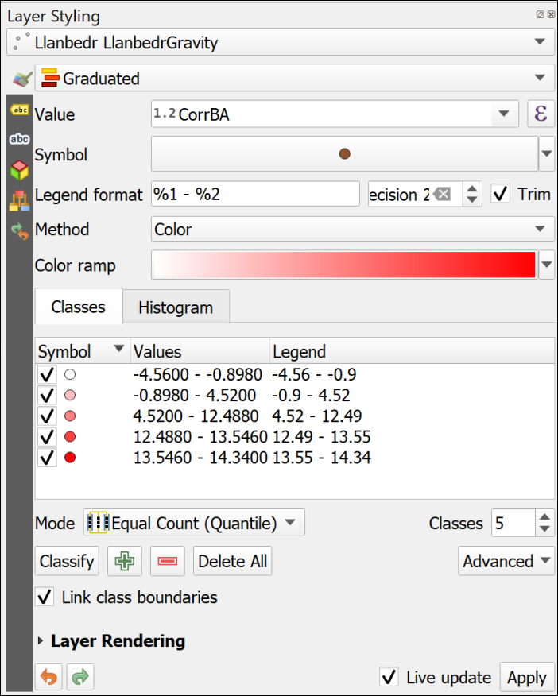
- There are a lot of settings in the Layer styling panel. For example you can change the colour ramp
- or you can change the intervals by changing
Modeand number ofClasses. - You can change the class values manually by double-clicking in the
Valuescolumn and filling in new Lower or Upper values. - It is also possible to change the
Methodto show graduated size instead of graduated colour. - Try clicking on
Load Valuesin theHistogramtab and have a look at how your data values are distributed.
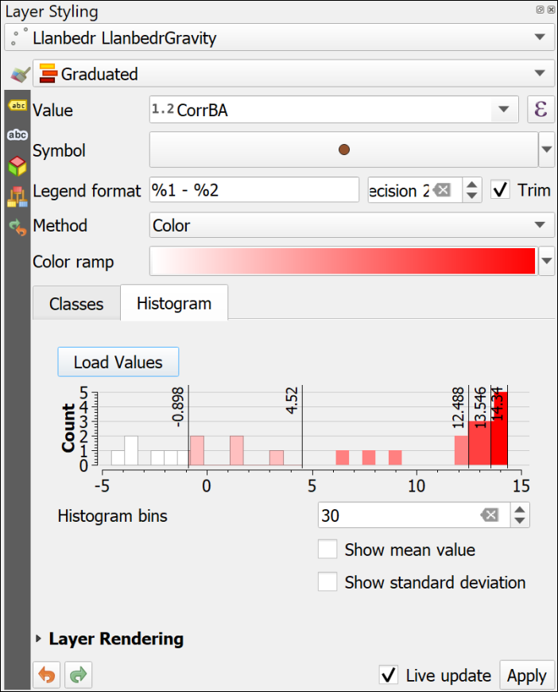
Displaying your point data
Try out some of the settings in the Layer styling panel and see how they can help you to display and interpret your data.
How well do you think this works for this data set?
Use your knowledge as a scientist to display this data in a suitable manner using these tools.
Sometimes turning off the background layer can help you to see the styles and labels. Don’t forget to turn it back on again later, though.
If you’re not happy with your symbology remember that it is always possible to remove the layer from your map then add it back in again and start from scratch.
Labelling the point layer
Another way of displaying the data is to add labels to the points which show the actual values.
- In the Layer Styling panel go to the
Labelstab (remember to hover over buttons or tabs to use tool tips) - Drop down
No Labelsand chooseSingle Labelsinstead - Set the
ValuetoCorrBAand the labels should appear on your map.
Again, play with the settings. You have already tried out labelling polygons in the chapter on Creating data, now you have a chance to find out more about labelling points.
- Change the font and the font size on the
Texttab. You don’t want these labels to be too large - they need to be visible but shouldn’t dominate the map. - How do the
Placementsettings (one of the tabs at the top of the panel - use the tooltips to find it again) affect the labels? Try setting theModetoCartographicthen increase theDistanceof the label from the feature.
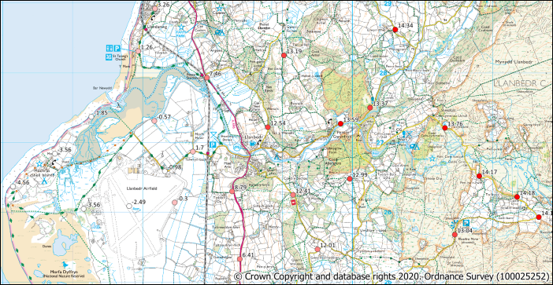
When you are happy with the symbols and the labels save your map and continue.
Creating a raster surface from your point data
At the moment you have data in point format. That gives measurements for particular locations, but what happens if you want to know the measurement at a location between the samples? This is where GIS analysis becomes essential.
Before you start have a look at the
LlanbedrGravitylayer and make a note of the highest and lowest values in theCorrBAfield. You can do this either from the labels, or from the attribute table.
QGIS can create a surface in raster format which is derived from point data. This will show z values for the spaces between the observed points which QGIS processing tools will have worked out from available data - a process known as interpolation. Inevitably the accuracy of the surface will increase if you have more data points in a particular area, but it still works if your points are widely spaced.
There are a couple of different methods of interpolation available in QGIS. The instructions below use IDW (Inverse Distance Weighted) as an example, but you’ll get a chance to have a look at an alternative. Different methods work best for different data.
ESRI, who make the ArcGIS software that we’re not using, have an article entitled Interpolating Surfaces in ArcGIS Spatial Analyst. Whilst that refers to their software not to QGIS, the principles are the same. Have a look at the article and their discussion of IDW and Spline amongst others.
The analysis tools in QGIS are available in the Processing Toolbox.
- Open the toolbox by going to
Processing > Toolbox
The Processing Toolbox should open to the right of your map.
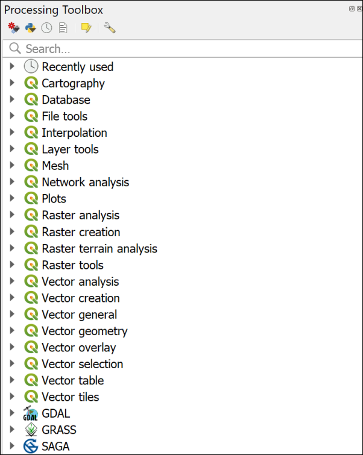
There are a choice of tool providers in the toolbox. Depending on your settings you should see a series of QGIS logos denoting native QGIS tools, but there may also be GDAL, GRASS and SAGA.
Warning
While you may appear to have GRASS and SAGA available, sometimes these need to be enabled correctly before they will actually work.
For more information about the processing framework see the page in the QGIS User Guide.
To use the tools:
- Start by searching for
IDWin the box at the top of the toolbox - Several options should appear, double-click on the one under the QGIS Interpolation heading called
IDW interpolation - Fill in the dialog as follows
- The
Vector layerinput is yourLlanbedrGravitylayer - you should be able to find it by dropping down the list of layers - The
Interpolation attributeis the field holding the data - in this case it’sCorrBA, again use the dropdown to find it - Click on the plus button underneath to add your input to the list.
- Click on the button next to the
Extentfield and selectUse Layer Extent...then select theLlanbedrGravitylayer as the extent - Set the
Pixel sizex and y to5.0. You can set it lower, e.g. to 2, but the size of the output file will be larger, and it will take longer for the tool to run. - at the bottom choose where to save the output - I usually create a subfolder of the project folder called
outputthen save all the raster data there - Give your output a short name which will tell you what it contains, e.g.
IDWgrav
- The
- Click on
Runand wait for the process to finish - it can take a while - The
Closethe window.
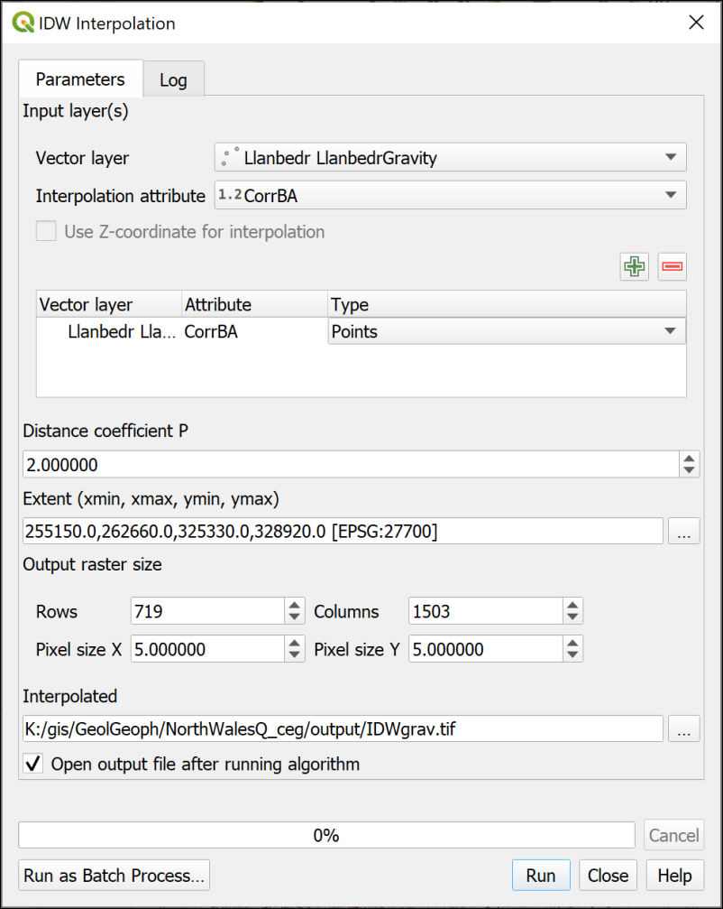
Your new layer should be automatically added to your map. If it isn’t, drag it there from the Browser now.
The tool will have interpolated the surface from your data points. You should end up with something similar, but probably not identical, to the picture below.
If your point labels are showing through feel free to turn off the LlanbedrGravity layer for now. It will make it easier to work with the surface.
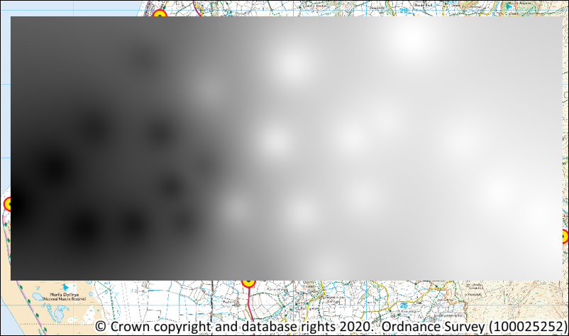
Looking at your data
If you look at the Layers panel you’ll be able to see the low and high measurements for the surface that you’ve just generated. Do these measurements make sense in terms of the low and high of your original data?
If you look at the ESRI article on interpolation does that help you to understand why the surface may or may not vary from your data?
Change the symbology of the raster surface
QGIS has used a default black to white colour ramp to display the gravity surface but it should be possible to find a more successful symbology for this raster layer.
- Select your new IDW layer in the Layers panel and open the Layer Styling panel if it isn’t already open.
- Use the dropdown to change
Singleband graytoSingleband pseudocolor. Your layer will disappear. - Drop down the
Min / Max Value Settingsand check thatMin/maxis ticked. Interpolationshould be set toLinear- Drop down the
Color rampand go toAll Color Ramps > RdBu- this should be Red to Blue. - Click on the
Color rampagain, and this time selectInvert Color Ramp- in general blue is seen as low and red as high so that fits this data better.
QGIS will display your gravity surface again.
- Add
mGalas theLabel unit suffix- you will probably want to put a space before it. - Change
Label precisionto 2 - Then click
Applyto apply those settings to the entry in the Layers panel.
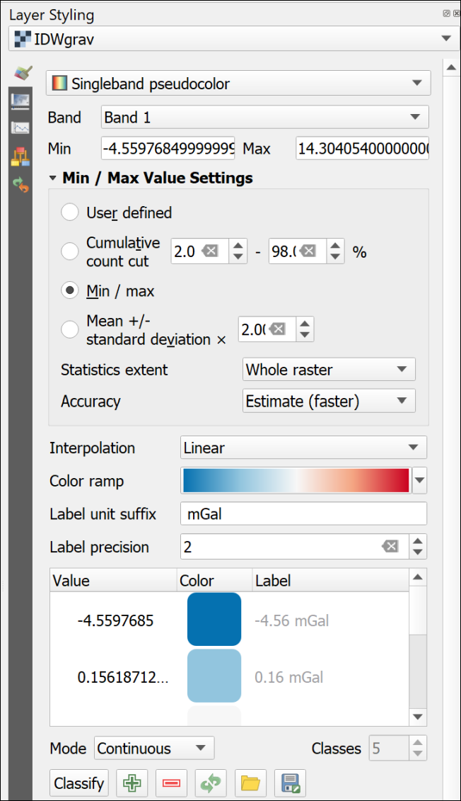
Setting transparency for a raster layer
At the moment your surface is fine for the colours, but it is covering up the background map. You need to make that visible so that it is possible to see where measurements are located.
- In the Layer Styling panel click on the second tab down on the left -
Transparency - Use the
Global Opacityslider to make the layer transparent. Try setting it to something like80%
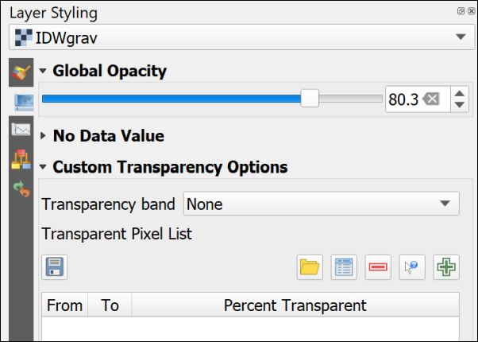
Play with the slider until you are happy that your layer is suitably transparent so that the background layer shows through but the raster surface is still clear.
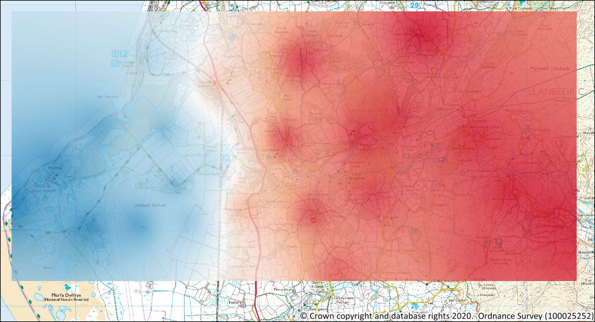
Trying out a different method of interpolation
There are multiple methods of interpolation but QGIS has a relatively limited choice. Kriging is only available under the SAGA library in QGIS and that doesn’t appear to be installed by default so I don’t cover it here.
For spline the best option is part of the GRASS toolbox, which should be installed.
- If the toolbox isn’t already open go to
Processing > Toolbox - search for
v.surf.rst- this will generate an interpolated map by splines (rst = Regularised splines with tension)
The form for this does look rather complex but you don’t need to fill in most of the choices.
- Set the
Input points layertoLlanbedrGravity - The
Name of the attribute column...isCorrBA
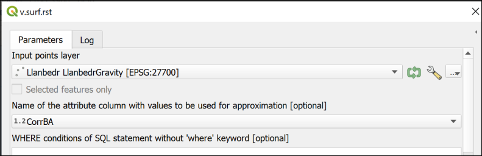
- Then go down to the
Advanced parametersand setGRASS GIS 7 region cellsizeto5(the cellsize is basically the resolution of the resulting raster layer) - Then go down again to
Interpolated RST [optional]- this is the output file.- Click on the three dots button to the right and
Save to file... - Choose where to save the file and give it a name, e.g.
RSTgrav.tifthenSave - Check that there is a tick in the box next to
Open output file after running algorithm
- Click on the three dots button to the right and
- Then change all of the dropdown boxes below to
[Skip output]to prevent those being created - Then click on
Run
I haven’t put an image for the whole of this form as it won’t fit on one page, but the image below shows the output section and the setting to save the Interpolated RST output, but none of the other layers.
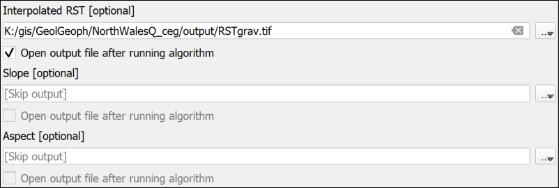
You may get quite a few red error messages while it runs - partly because we don’t have a large number of points to base the interpolation on. But QGIS should then add a new layer to your map.
- Follow the same instructions to symbolise this output as you did the IDW output and make it transparent
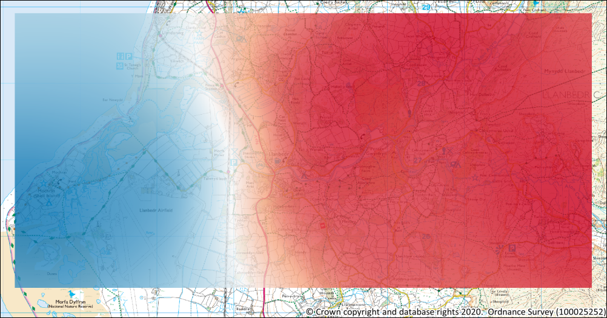
If you look at the Layers panel you’ll be able to see the low and high measurements for the RST surface that you’ve just generated. Do these measurements make sense in terms of the low and high of your original data?
If you look at the ESRI article on interpolation does that help you to understand why the surface may or may not vary from your data?
Comparing the raster surfaces
You can compare the values of each surface at various points by using the Identify Features tool from the Attributes toolbar.
- Make sure that the IDW and RST layers are both visible, and turn off all of the other layers in the map
- Check that the Attributes toolbar is visible by going to
View > Toolbarsand checking that there is a tick next to it.
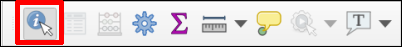
- Click on the
Identify featuresbutton (highlighted in the image above) - Then click somewhere on your map and select
Identify All (2) - The
Identify Resultswindow should pop up showing a tree view of the value of the two layers at that point asBand 1. - Click in a few places and see how the values compare
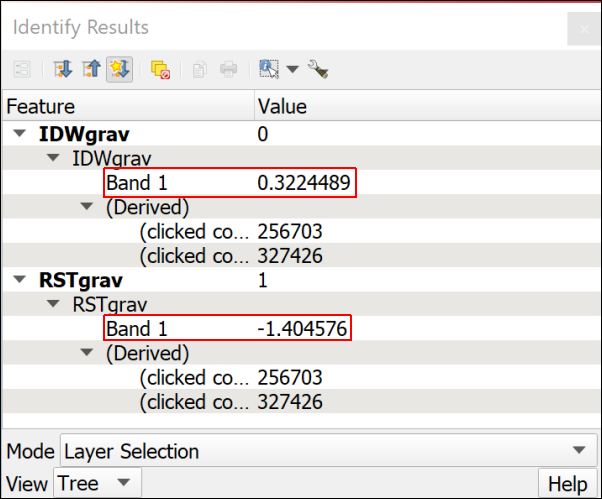
Have another look at the ESRI article on Interpolating Surfaces in ArcGIS Spatial Analyst.
Think about which surface you think is most appropriate for the data you have here and use that surface for the rest of the exercises in this workbook.
Keep a note of why you have chosen the surface that you have as you’ll need to include this explanation in the layout for the assessment at the end of this workbook.
Once you have decided which layer to use remove the other from your map and turn the raster-25k_3706482 layer back on so that it is visible.
Deriving contours from a surface
Once you have created a surface it is easy to derive contours to display the surface in 2D. This can make patterns in the data more obvious.
- If the toolbox isn’t already open go to
Processing > Toolbox - Search for
Contour - You should find the correct tool under
GDAL > Raster extraction > Contour. Double-click on it to open. - Fill in the form as follows:
- The
Input layeris the raster surface that you’ve chosen to use, e.g. I’ve usedIDWgravin the example. - The
Interval between contour linesdepends on your data. Look at the highest and lowest values and think what might be a reasonable interval. If it doesn’t look good first time it’s easy to run the tool again. I’ve chosen to enter1. - Under
Contoursclick on the three dots button on the right- Click on
Save to file... - Navigate to the folder in which you want to save your data.
- Choose
GPKG files (*.gpkg)as theSave as type:and give your output a name, such asContours1.gpkg(the “1” will show the contour interval) andSave. Note that unfortunately this tool won’t add the output to an existing geopackage.
- Click on
- Click on
Run
- The
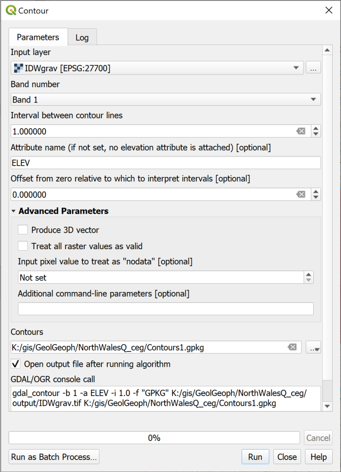
QGIS should then generate contours and add them as a layer to your map.
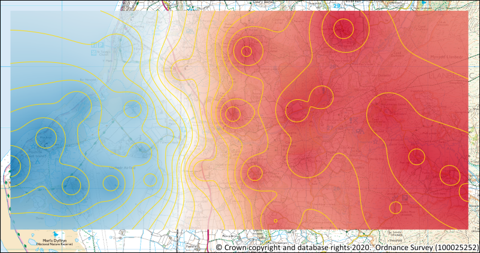
Use the Layer styling panel to set the contours to a suitable colour and thickness. They should be visible on your map, but not stand out too much. This is a map people will be looking at in close up, not a poster.
Try setting the scale of the map to 1:25000 (the scale you’ll be using for the output) then in the layer styling panel set the
UnittoMap Units, which in this case are metres. You’ll then be able to control how theWidthof the line appears at that scale as that unit “on the ground”.If the Unit is set to a measurement, such as pixels, then the lines stay the same width on the screen whatever your zoom level. Try it out and see.
Adding labels to contours
Contours for any surface don’t help much if you don’t know the value of each of them. QGIS is able to label features in a map with any field from the attribute table, as you saw in the exercises on digitising data.
- Right-click on your contours layer in the contents pane and select to
Open Attribute Table.
The attribute table will show the information, or attributes, about the features in this layer and should enable you to see which field holds the height, or elevation, data.
To add labels to your contours do the following:
- In the Layer styling panel click on the
Labelstab on the left. - Check that you have your contours layer selected at the top
- Drop down the list where it currently says
No Labelsand selectSingle Labelsinstead - In the
Valuefield select the field you made a note of above. The one which contains your heights. In my case this field isELEV
The labels will appear on your map, but they are too big, too black and not on top of the lines! Use the settings in the various tabs of the Layer styling panel to
- make the labels smaller - they need to be readable, but not to dominate the map. Again, you can change the units to
Map Unitsto have more control over the size when printed. - change the font if you think a different font would be clearer
- make the labels a paler colour
- use the
Placementtab to move the labelsOn line
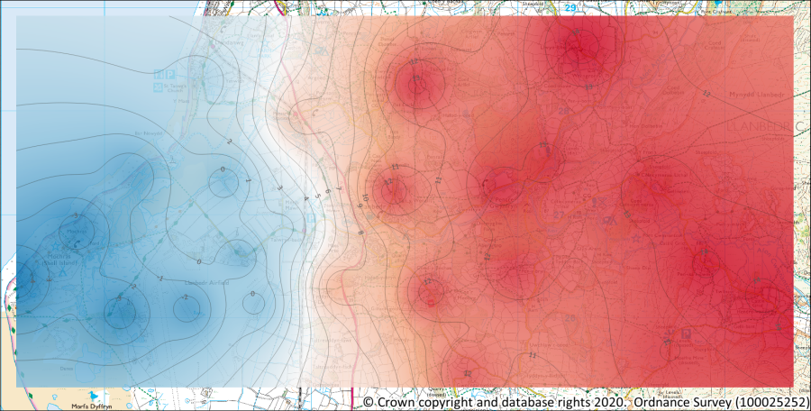
You could also try labelling your data points, if you think that it would be useful to someone else looking at your map.
Output from this chapter
The example below shows the possible output from this chapter. Your layout should look different. You will have made your own decisions about what to include and how to symbolise and label your data. You’ll learn more about layouts in a future chapter and will get a chance to apply those techniques to this map to produce a professional-looking map layout.
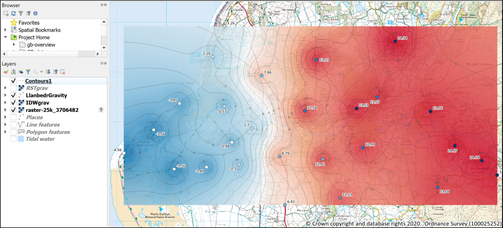
Keep this North Wales map project safely as you’ll need it for future chapters and for the module assessment.
More information: Analysis in GIS
There is more about data analysis in GIS in the module reading list1. In particular have a look at the following:
Heywood, Cornelius and Carver (2011) chapter 6 on page 174 and following.
Longley et al. (2015) Part III is all about analysis, but in particular have a look at chapter 13 on page 290 and following.
More information on techniques in QGIS
The QGIS Training Manual includes a lot of information on both vector analysis and raster analysis in QGIS. If you are looking for ideas of how to use QGIS with your data in future this is a key resource.
If you prefer to learn from videos then Hans van der Kwast from the IHE Delft Institute for Water Education has a very good range on YouTube. His main interest is hydrology but the techniques he uses will work for other data too. He also has GIS OpenCourseWare for Hydrological Applications online which provide a lot of resources for learning GIS with QGIS.
-
Reading list available from Minerva and from the module catalogue. ↩